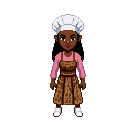
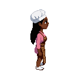
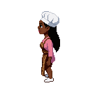

Chef (her) v2 — white hat · leopard apron · pink sleeves · white shoes
built on the "A" silhouette you picked · dreadlocks held (feminine cue in)

south (front)

east
north (back)

west
did the leopard print take this time?
 north (back)
north (back)